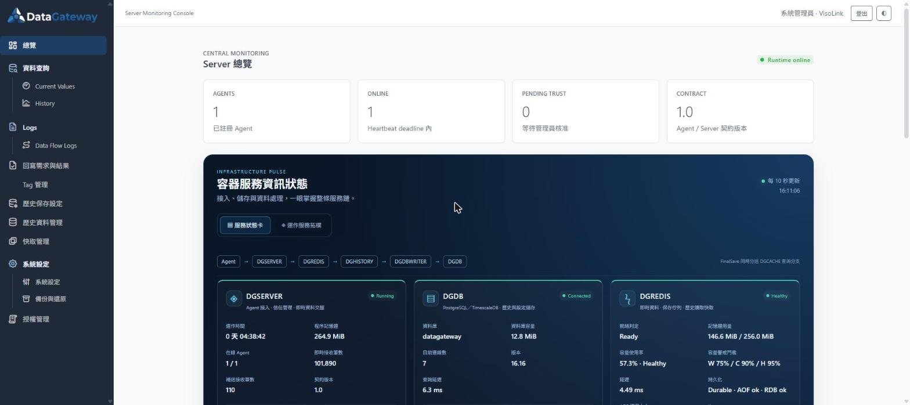

總覽與容器連線設定資訊
「總覽」一次看到 Agent 數量、六個 DG 服務的狀態，以及其他系統要連進 DG 時需要的連線資訊。
查看 Server 總覽與服務狀態

- AGENTS
- 已註冊的 Agent 數量。
- ONLINE
- 在 Heartbeat 期限內有回應的 Agent 數量。
- PENDING TRUST
- 等待管理員核准的 Agent 數量；大於 0 時到第 3 章核准。
- CONTRACT
- Agent 與 DG 的通訊契約版本。
- 點左側「總覽」，確認右上角顯示「Runtime online」。
- 看四張統計卡，確認 Agent 數量與 Online 數量一致。
- 在「容器服務資訊狀態」切換「服務狀態卡」或「運作服務拓樸」，檢查 DGSERVER、DGDB、DGREDIS、DGCACHE、DGHISTORY、DGDBWRITER 六個服務的狀態標籤。
六個服務都顯示 Running、Connected、Healthy 或 Ready，Agent 數量與 Online 數量相同。
失敗時先查
- 卡片顯示「未取得」：該服務沒有回應，到「系統設定 › 系統概覽」確認服務健康狀態（第 11 章）。
- 右上角顯示「DG 維護中」：DG 已切到維護中，資料接收與查詢暫停（第 14 章）。
Agent 連線資訊（給 Agent 用）

- AGENT 連線 URL
- Agent 連到 DG 的位址，格式為 https://<DG 位址>:7180。
- ENROLLMENT_TOKEN
- Agent 第一次註冊時使用；按「顯示」才看得到，再按「複製」。
- TLS 信任
- Agent 端要匯入 DG 公開憑證（PEM／CRT），位址必須和憑證名稱相符。
- Heartbeat
- 每 10 秒一次；超過 30 秒沒有活動判定為 Offline。
- 往下捲到「容器連線設定資訊」的「Agent 連線」卡。
- 按 AGENT 連線 URL 旁的「複製」。
- 按 ENROLLMENT_TOKEN 的「顯示」，再按「複製」，貼到 Agent「DG 連線設定」（Agent 手冊第 3 章）。
- 複製完按「隱藏」。
Agent 取得 DG 位址與註冊 Token，可以送出註冊；之後回到第 3 章核准。
Enrollment token 等同密碼，不要貼在聊天群組或文件中。
失敗時先查
- Agent 連不上：確認 Agent 主機能連到 DG 的 7180 埠，且位址與憑證名稱相同（不可用 localhost）。
加值開發 WebAPI（歷史資料讀取）
- API URL
- DG 查詢服務位址，格式為 http://<DG 位址>:5282/。
- 帳號／密碼
- PIES 相容介面的 HTTP Basic 帳密，供 VisoLink 建立 DataGateway 資料來源；密碼就是讀取金鑰。
- 一般 API
- 以 X-VisoLink-Api-Key 依角色驗證，使用另外配置的 API Key。
- 在「加值開發 WebAPI」卡按 API URL 旁的「複製」。
- 按帳號旁的「複製」。
- 按密碼的「顯示」，再按「複製 WebAPI 密碼」。
- 到 VisoLink 後台「資料來源」新增「VisoLink DataGateway」類型，貼上 URL、帳號與密碼後按「測試連線」（VisoLink 後台手冊）。
- 複製完按「隱藏」。
VisoLink 或外部系統可透過 WebAPI 讀取 DG 的歷史資料。
WebAPI 是 HTTP，用於歷史資料讀取；VisoLink 的即時畫面與回寫請用 2.4 的配對碼。
失敗時先查
- 測試連線失敗：確認對方主機能連到 DG 的 5282 埠、帳密沒有多貼空白。
VisoLink 即時與回寫配對碼
- 控制通道 URL
- VisoLink 即時來源連到 DG 的 HTTPS 位址，格式為 https://<DG 位址>:7443。
- VisoLink 配對碼
- 一次包含控制通道 URL、讀取帳密、回寫服務身分與 DG 公開憑證。
- 重新產生配對碼
- 配對碼外流或更換 VisoLink 時使用；舊配對碼立即失效。
- 在「VisoLink 即時與回寫」卡按配對碼的「顯示」。
- 按「複製 VisoLink 配對碼」。
- 到 VisoLink 後台新增即時來源，貼上配對碼後按「測試連線」（VisoLink 後台手冊）。
- 按「隱藏」。
VisoLink 即時來源能讀取 DG 的 Tag 目錄、接收即時推送；來源開放回寫時，VisoLink 的寫入要求經 DG 轉給 Agent。
配對碼等同密碼。按「重新產生配對碼」後，所有已貼上舊配對碼的 VisoLink 都要重新貼上。
失敗時先查
- VisoLink 測試連線失敗：確認 VisoLink 主機能連到 DG 的 7443 埠，並使用最新產生的配對碼。